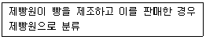
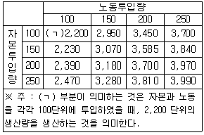
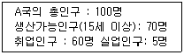

직업상담사-2급(구) (2002-03-10 기출문제)
1과목: 직업상담ㆍ심리학
1. 다음 중 직무스트레스를 가장 많이 받는 성격유형은?
- A형 성격
- B형 성격
- C형 성격
- D형 성격
(정답률: 알수없음)

2. 다음에 제시된 진술문에서 검사지와 검사도구를 활용하는 영역이 아닌 것은 ?
- 전반적인 태도나 능력을 결정하기
- 심층적인 탐색을 위해 직업의 범주를 확장시키거나 좁히기
- 직업을 결정하기 어렵거나 결정을 내리지 못하는 원인을 파악하기
- 자기인식이 매우 잘되는 내담자에게 확인시키기
(정답률: 알수없음)
3. 직무의 활동, 과제, 그리고 작업조건을 기술한 것은 ?
- 직무안내서
- 직무기술서
- 직무명세서
- 직무지침서
(정답률: 알수없음)
4. 다음 중 직업상담사의 직무내용과 가장 거리가 먼 것은?
- 직업문제에 대한 심리치료
- 직업관련 심리검사도구의 제작
- 직업상담 프로그램의 개발과 운영
- 구인ㆍ구직상담, 직업적응, 직업전환, 은퇴 후 등의 직업상담
(정답률: 알수없음)
5. 직무평가는 대체로 임금수준을 결정하기 위하여 사용하는 방법이다. 다음 사항 중 직무를 평가할 때 일반적으로 사용되는 요인 중 가장 거리가 먼 것은 ?
- 직무를 수행하는데 필요한 지식과 기술
- 직무결정 과정에서의 문제해결 능력
- 직무에서 취한 행동에 대한 책임
- 부적절한 직무환경에 대한 거부능력
(정답률: 알수없음)
6. 직업 상담에서 내담자로 하여금 상담의 목표를 설정하게 하는 이유로 가장 적절한 것은 ?
- 상담전략의 선택과 상담결과의 평가를 위해
- 내담자의 가치관 인식과 성취동기 향상을 위해
- 내담자가 원하는 것을 밝히고 개입하기 위해
- 상담목표의 실현가능성을 예측하기 위해
(정답률: 알수없음)
7. 겔랏(Gelatt)이 제시한 의사결정 과정 단계로 맞는 것은?
- 목표수립 → 정보수집 → 실현가능성 예측 → 가능한 대안의 탐색 → 가치평가 → 의사결정 → 의사결정 평가 → 재투입
- 목표수립 → 정보수집 → 가능한 대안의 탐색 → 가치평가 → 실현가능성 예측 → 의사결정 → 의사결정 평가 → 재투입
- 목표수립 → 가능한 대안의 탐색 → 정보수집 → 실현가능성 예측 → 가치평가 → 의사결정 → 의사결정 평가 → 재투입
- 목표수립 → 정보수집 → 가능한 대안의 탐색 → 실현가능성 예측 → 가치평가 → 의사결정 → 의사결정 평가 → 재투입
(정답률: 알수없음)
8. 직업 상담과정의 구조화단계에서 상담자가 할 일로 가장 알맞은 것은 ?
- 내담자에게 상담자의 자질, 역할, 책임에 대해서 미리 알려줄 필요가 없다
- 내담자에게 검사나 과제를 잘 이행할 것을 기대하고 있다는 것을 분명히 밝힌다.
- 상담 중에 얻은 내담자에 대한 비밀을 지키는 것은 당연하므로 사전에 이것을 밝혀두는 것은 오히려 내담자를 불안하게 만든다.
- 상담과정은 예측할 수 없으므로 상담 장소, 시간, 상담의 지속 등에 대해서 미리 합의해서는 안 된다.
(정답률: 알수없음)
9. 다음 중 직업심리검사의 용도로서 적합하지 않은 것은?
- 직접 관찰하기 어려운 내적 특성의 진단
- 한 개인의 전반적인 능력을 평가하는 절대적 기준
- 현재 또는 향후 행동이나 성과의 예측
- 조직에서의 선발ㆍ배치ㆍ승진 등과 같은 인사결정의 자료
(정답률: 알수없음)
10. 헥크만(Hackman)과 올드함(Oldham)의 직무확충모형에 의하면 직무의 5가지 핵심적 특징이 중요한 심리적 의미를 갖게 한다고 한다. 다음에서 그 연결이 잘못된 것은?
- 자율성→ 작업 성과에 대한 책임감
- 직무에서의 귀환(피드백)→ 작업 활동결과에 대한 지식
- 과제의 정체성→ 작업에 대한 의의
- 성장 가능성→ 높은 작업동기
(정답률: 알수없음)
11. 행동적 상담기법 중 불안을 감소시키는 방법으로 이완법과 함께 쓰이는 방법은 ?
- 강화(reinforcement)
- 변별학습(discrimination learning)
- 사회적 모델링(social modeling)
- 체계적 둔감화(systematic desensitization)
(정답률: 알수없음)
12. 다음 중 신뢰도 계수의 최대값은 ?
- 1.0
- 0.5
- 0.2
- 0.1
(정답률: 알수없음)
13. 다음 타당도에 대한 설명 중 가장 적절하지 않은 것은?
- 안면타당도는 전문가가 아닌 일반인이 검사문항을 평가하는 것으로 검사제작시 참고할 수 있는 방법이다.
- 예언타당도의 단점을 보완해주는 것이 공존타당도이다.
- 구성타당도는 객관적으로 관찰가능하지 않은 추상적인 개념 즉 적성, 지능, 흥미 등을 얼마나 잘 측정하는지를 나타낸 것이다.
- 수렴타당도는 연구자가 개발한 새로운 검사와 다른 특성을 측정하는 기존 검사의 상관계수를 구해서 분석하는 방법이다.
(정답률: 알수없음)
14. GATB 직업적성검사 중 실물이나 도해 또는 표에 나타나는 것을 세부까지 바르게 지각하고 시각으로 비교 판별하는 능력은 ?
- 사무지각
- 공간지각
- 형태지각
- 운동반응
(정답률: 알수없음)
15. 초기 면담의 주요 요소 중 내담자로 하여금 행동의 특정 측면을 검토해보고 수정하게 하며 통제하도록 도전하게 하는 것은?
- 계약
- 감정이입
- 리허설
- 직면
(정답률: 알수없음)
16. 개인의 진로계획을 구조화하는데 있어서 "노동시장에 신규로 진입하거나 또는 재진입하고자 하는 개인들을 돕고, 승진가능성 및 직업전환의 가능성을 고려하면서 개인경험 및 획득기술을 기록" 하기 위한 것은 ?
- 포괄적 진로계획
- 진로수첩
- 진로서류철
- 진로일기
(정답률: 알수없음)
17. 규준의 종류에 해당하지 않는 것은 ?
- 표준점수
- 표준등급
- 원점수
- 백분위
(정답률: 알수없음)
18. 심리검사에서 규준이란?
- 한 집단의 특성을 가장 간편하게 표현하기 위한 개념으로 그 집단의 대표값을 말한다.
- 한 집단의 수치가 얼마나 동질적인지를 표현하기 위한 개념으로 점수들이 그 집단의 평균치로부터 벗어난 평균거리를 말한다.
- 서로 다른 체계로 측정한 점수들을 동일한 조건에서 비교하기 위한 개념으로 원점수에서 평균을 뺀 후 표준편차로 나눈 값을 말한다.
- 원점수를 표준화된 집단의 검사점수와 비교하기 위한 개념으로 대표집단의 검사점수 분포도를 작성하여 개인의 점수를 해석하기 위한 것이다.
(정답률: 알수없음)
19. 생애주기에 대한 미래시간 전망을 갖고 있는 사람이 가지고 있지 않는 특징은 다음 중 어떤 것인가?
- 낙천주의적 태도
- 창조적 태도
- 현재집착 태도
- 도전적 태도
(정답률: 알수없음)
20. 인간 중심(내담자 중심) 직업 상담을 할 때 직업 상담자가 갖추어야 할 세 가지 기본 태도가 아닌 것은 ?
- 일치성/진실성
- 해석능력
- 공감적 이해
- 수용
(정답률: 알수없음)
21. 직업상담의 CIPPM(Context, Input, Process, Product Model) 모형의 평가 관점을 제시한 것이다. 이 모형의 관점이 아닌 것은 ?
- 상담자가 생산적인가.
- 내담자가 목적을 성취하였는가.
- 프로그램의 설계는 적정한 것인가.
- 가장 효과적인 프로그램은 무엇인가.
(정답률: 알수없음)
22. 정신분석적 상담에서 상담자와 내담자의 관계를 가장 두드러지게 보여주는 현상으로서 내담자가 과거의 중요한 인물에게서 느꼈던 감정이나 생각을 상담자에게 투사하는 현상은 ?
- 증상형성
- 전이
- 저항
- 자유연상
(정답률: 알수없음)
23. 좋아하는 직무의무와 싫어하는 직무의무는 각각 그들의 욕구와 일치하거나 일치하지 않는다고 주장한 학자는?
- 카르네스(Carnes)
- 울프(Wolf)
- 랜디스(Landis)
- 월쉬(Walsh)
(정답률: 알수없음)
24. 형평성(공정성) 이론에서는 근로자는 자기의 투입과 산출의 비율을 자기와 관련 있는 타인과 비교하여 그 비율이 크거나 작다고 느낄 때, 불공정을 느끼게 되며 형평성(공정성)을 회복(혹은 불공정성을 해소)하기 위한 행동을 한다고 주장한다. 형평성 회복(혹은 불공정성의 해소) 행동으로 적합하지 않은 것은?
- 투입을 증가 혹은 감소시킨다.
- 보상이나 부가급부를 높이거나 낮추려고 시도한다.
- 비교대상을 변경한다.
- 과거에 다루어 보지 않은 새로운 과업에 도전한다.
(정답률: 알수없음)
25. 한 분야에서의 전문가보다는 다기능 전문가를 육성하기 위한 경력 개발 프로그램을 무엇이라 하는가?
- 직무 확충(Job Enrichment)
- 직무 순환(Job Rotation)
- 직무 확대(Job Enlargement)
- 직무 재분류(Job Reclassification)
(정답률: 알수없음)
26. 경력개발의 초기단계에서 수행하는 중요과제가 아닌 것은 ?
- 조직에서 적응토록 방향을 설정한다.
- 개인적인 목적과 승진기회의 관점에서 경력계획을 탐색한다.
- 직업집착 및 상황을 증진시키기 위해 계속 적응한다.
- 지위와 책임을 알고 만족스런 수행을 증명해 보인다.
(정답률: 알수없음)
27. 직무분석 자료의 특성으로 옳지 않은 것은?
- 체계성
- 다목적용
- 가공된 정보
- 가장 최신의 정보
(정답률: 알수없음)
28. 홀랜드(Holland)의 직업흥미검사에서 측정되지 않는 흥미 유형은 어떤 것인가?
- 관습형- 동조, 자료지향
- 탐구형- 사고, 아이디어지향
- 사회형- 자선, 사람지향
- 성취형- 높은 목표, 성공지향
(정답률: 알수없음)
29. 인간의 진로발달단계를 평생발달 단계에 따라 성장기, 탐색기, 확립기, 유지기, 쇠퇴기로 나누고 각 단계의 특징을 설명한 사람은 누구인가?
- 긴즈버그(Ginzberg)
- 에릭슨(Ericson)
- 수퍼(Super)
- 고드프레드슨(Gottfredson)
(정답률: 알수없음)
30. 내담자의 불완전하고 부적응적인 학습이 어디서 발생했는지를 밝혀서 그것을 변화시키는데 초점을 두는 직업상담이론은 ?
- 정신역동적 직업상담
- 발달적 직업상담
- 내담자중심 직업상담
- 행동주의 직업상담
(정답률: 알수없음)
31. 특성-요인 직업 상담의 과정 중 내담자가 능동적으로 참여하는 단계는 ?
- 상담 또는 치료단계
- 분석단계
- 진단 단계
- 종합단계
(정답률: 알수없음)
32. 다음 중 직업상담의 과정이 순서대로 바르게 기술된 것은 무엇인가?
- 관계형성과 구조화-측정-목표설정-중재-평가
- 관계형성과 구조화-목표설정-중재-측정-평가
- 관계형성과 구조화-측정-평가-목표설정-중재
- 관계형성과 구조화-중재-목표설정-측정-평가
(정답률: 알수없음)
33. 직무분석을 위한 면접 시 유의할 점이 아닌 것은 ?
- 작업자가 말하는 내용에 대해 의견대립을 보이지 말아야 한다.
- 조직이나 작업방법에 대한 개선방안을 제안한다.
- 상사나 감독자의 허락을 먼저 받고 작업자와 면담한다.
- 직무에서의 임금분류체계에 관심을 보이지 말아야 한다.
(정답률: 알수없음)
34. 다음 중 습관적 수행 검사(typical performance test)에 해당하는 것은 ?
- 적성검사
- 지능검사
- 성취검사
- 흥미검사
(정답률: 알수없음)
35. 다음 중 성격 5요인검사(혹은 5요인 성격검사)의 특성요인에 포함되지 않는 것은?
- 성실성
- 공격성
- 정서적 불안정성
- 경험에의 개방성
(정답률: 알수없음)
36. 위기상담의 방법으로 가장 거리가 먼 것은?
- 정서적 지원을 제공한다.
- 정서 발산을 자제하게 한다.
- 희망과 낙관적인 태도를 전달한다.
- 위기 문제에 집중하도록 선택적인 경청을 한다.
(정답률: 알수없음)
37. 매슬로우(Maslow)는 인간의 동기를 욕구위계로 분류하여 설명한다. 욕구위계 중 가장 낮은 하위단계의 욕구는 어느 것인가?
- 사회적 욕구
- 안전의 욕구
- 생리적 욕구
- 자아실현의 욕구
(정답률: 알수없음)
38. 셀리에(Selye)가 말하는 스트레스의 일반적 증후군에 해당되는 단계가 아닌 것은 ?
- 재발단계(recurrence stage)
- 저항단계(resistance stage)
- 경보단계(alarm stage)
- 소진단계(exhaustion stage)
(정답률: 알수없음)
39. Locke가 주장했던 "자신의 직무나 직무경험에 대한 평가로부터 비롯되는 유쾌하거나 정적인 감정상태"를 무엇이라고 하는가?
- 직무만족
- 직업적응
- 작업동기
- 직업수행
(정답률: 알수없음)
40. 일을 잘했거나 실수한 경험적 사례들을 작업자들로부터 수집해서 구체적 행동을 내용분석해서 범주별로 분류하고 분석한 다음, 지식, 기술, 능력 등의 직무요건들을 추론해 내는 질적인 직무분석기법은 무엇인가 ?
- 중요사건법
- 면접법
- 질문지법
- 행동 관찰법
(정답률: 알수없음)
2과목: 직업정보론(노동시장론 포함)
41. 다음 중 한국표준직업분류의 분류원칙이 아닌 것은 ?
- 최하 직능수준 우선 원칙
- 포괄적인 업무에 대한 분류
- 생산업무 우선 원칙
- 취업시간이 많은 직업을 선택하는 원칙
(정답률: 알수없음)
42. 아래의 직업분류사례는 다음 중 어떠한 분류원칙에 근거한 것인가 ?

- 수적우위 원칙
- 최상급 직능수준 우선 원칙
- 최하급 직능수준 우선 원칙
- 생산업무 우선 원칙
(정답률: 알수없음)
43. 기계, 의료 등 각종 장비를 판매하기 위해 장비에 대한 공학적 지식과 같은 기술적인 서비스를 제공하는 직종은?
- 광고영업원
- 방문외판원
- 기술영업원
- 전자기술공
(정답률: 알수없음)
44. 이원적 노사관계론의 구조를 올바르게 나타낸 것은?
- 제1차 관계: 경영 대 노동조합관계, 제2차 관계: 경영 대 정부기관관계
- 제1차 관계: 경영 대 노동조합관계, 제2차 관계: 정부기관 대 노동조합관계
- 제1차 관계: 경영 대 종업원관계, 제2차 관계: 경영 대 노동조합관계
- 제1차 관계: 경영 대 종업원관계, 제2차 관계: 정부기관 대 노동조합관계
(정답률: 알수없음)
45. 다음 중 우리 나라 고용보험의 주요 사업이 아닌 것은 ?
- 실업부조
- 고용안정사업
- 실업급여
- 직업능력개발사업
(정답률: 알수없음)
46. 다음은 가계생산활동이론(household production theory)의 관점에서 여성의 경제활동참가를 결정하는 요인들을 설명하고 있다. 이론적 설득력이 가장 약한 것은?
- 남편의 소득이 낮을수록, 자녀의 수가 적을수록 여성의 경제활동이 증가된다.
- 가계생산의 기술(household technology)이 향상될수록 여성의 경제활동참가율은 높아진다.
- 파트타임 고용시장의 미발달은 30대 기혼여성의 경제활동참가를 낮추는 요인으로 작용한다.
- 도시화의 진전은 여가활동에서 시간집약적 여가활동에 의존하게 되어 시장노동의 가능성을 열어준다.
(정답률: 알수없음)
47. 국가기술자격법상 기사의 응시자격이 없는 자는 ?
- 응시하고자하는 종목이 속하는 동일 직무분야에서 4년 이상 실무에 종사한 자
- 4년제 대학졸업예정자
- 4년제 대학의 3학년 수료 후 중퇴자
- 기능사자격을 취득한 후 응시하고자 하는 종목이 속하는 동일 직무분야에서 2년 동안 실무에 종사한 자
(정답률: 알수없음)
48. 훈련은 크게 일반훈련과 기업특수훈련으로 구분된다. 다음은 일반훈련과 기업특수훈련의 의미를 열거한 것이다. 이 중 가장 적절치 못한 것은?
- 일반훈련을 받은 사람은 훈련 후 자신의 기회임금만큼을 받지만, 특수훈련을 받은 사람은 훈련 후 자신의 기회임금보다 더 많은 임금을 받는다.
- 특수훈련을 받은 사람들의 고용은 경기변동에 상대적으로 덜 민감하다.
- 기업은 경기가 나빠지면 특수훈련을 받은 사람부터 먼저 해고한다.
- 특수훈련을 받은 사람은 일반훈련을 받은 사람보다 이직률이 낮다.
(정답률: 알수없음)
49. 직업명세사항에 대한 설명으로 올바른 것은 ?
- 작업장, 사람, 사물에 관한 직무수행정도를 나타낸 것이다.
- 보다 많은 책임이 요구되는 직무일수록 높은 숫자로 표시된다.
- 보다 많은 판단이 요구되는 직무일수록 높은 숫자로 표시된다.
- 수행직무를 요약표시하기 위해 표준전문용어화 한 것이다.
(정답률: 알수없음)
50. 경기가 나빠져 실업률이 높아졌을 때 경제활동참가율이 감소하였다면?
- 부가노동자효과가 실망노동자효과보다 크게 나타났기 때문이다.
- 실망노동자효과만 나타났기 때문이다.
- 실망노동자효과가 부가노동자효과보다 크게 나타났기 때문이다.
- 부가노동자효과만 나타났기 때문이다.
(정답률: 알수없음)
51. 임금상승이 노동의 공급량에 미치는 대체효과와 소득효과에 대한 다음의 설명 중 가장 부적절한 것은 ?
- 대체효과가 소득효과보다 크다면 임금이 상승함에 따라 노동의 공급량은 증대된다.
- 고소득층인 경우 임금상승이 있으면 소득효과가 대체효과보다 크다.
- 상대적으로 높은 임금수준의 근로자일수록 후방굴절 하는 노동공급곡선을 가지기 쉽다.
- 통상임금이 아닌 초과근무수당의 변화는 대체효과를 초래하지 않는다.
(정답률: 알수없음)
52. 직무급을 도입하기 위한 전제조건으로서 적합하지 않은 것은 ?
- 직무의 표준화와 전문화가 이루어져야 한다.
- 노동조합의 동의가 있어야 한다.
- 직무중심의 채용과 평가제도가 확립되어야 한다.
- 직종 간 고용의 유동성이 있어야 한다.
(정답률: 알수없음)
53. 노동시장의 유연성에 대한 설명으로 맞는 것은 ?
- 수량적 유연성에는 해고의 용이, 계약근로나 시간제 근로 도입용이 정도, 근로시간제도 등을 들 수 있으며, 기능적 유연성에는 임금유연성, 하청 등 작업의 외부화를 들 수 있다.
- 노동시장의 유연성은 고용, 임금, 노동시간 등의 지표로 측정될 수 있지만 노사관계변수는 영향을 미치지 않는다.
- 노동시장의 유연성이란 경제 환경의 변화에 노동시장이 유연하게 반응할 수 있는 정도를 말한다.
- 해고가 비교적 자유로우며 직무를 중심으로 한 노동시장이 잘 발달되어 있는 국가는 독일, 스웨덴 등 유럽 국가이다.
(정답률: 알수없음)
54. 한국직업사전의 직업명세사항에서 가벼운 작업(L)이란 ?
- 최고 8㎏의 물건을 들어 올리고, 4㎏ 정도의 물건을 빈번히 들어 올리거나 운반 한다.
- 최고 6㎏의 물건을 들어 올리고, 2㎏ 정도의 물건을 빈번히 들어 올리거나 운반 한다.
- 최고 7㎏의 물건을 들어 올리고, 4㎏ 정도의 물건을 빈번히 들어 올리거나 운반 한다.
- 최고 5㎏의 물건을 들어 올리고, 2㎏ 정도의 물건을 빈번히 들어 올리거나 운반 한다.
(정답률: 알수없음)
55. 프리만(Freeman)과 메도프(Medoff)가 지적한 노동조합의 두 얼굴에 해당하는 것은?
- 결사와 교섭
- 자율과 규제
- 독점과 집단적 목소리
- 자치와 대등
(정답률: 알수없음)
56. 근로시간에 대한 다음 설명 가운데 사실과 일치하지 않은 것은 ?
- 1970년 이후 근로시간은 감소추세가 계속되고 있다.
- 초과근로시간의 변화는 경기의 영향을 받는다.
- 사업체의 취업규칙이나 단체협약에서 정한 정상 근로 일에 휴식시간을 제외한 실제로 일하는 시간을 법정근로시간이라고 한다.
- 제조업의 전체 근로시간이 농업을 제외한 전 산업의 평균에 비하여 긴 편이다.
(정답률: 알수없음)
57. 다음 중 내부노동시장(internal labor market)의 형성요인이 아닌 것은?
- 관습
- 현장훈련
- 숙련의 특수성
- 노동 강도
(정답률: 알수없음)
58. 중앙고용정보원에서 발간하는 "구인·구직 및 취업동향"에서 구인이 200명, 구직이 400명, 취업이 150명 일 때 충족률은 ?
- 85%
- 75%
- 50%
- 38%
(정답률: 알수없음)
59. 한국표준직업분류 제5차 개정판(2000년)의 특징이 아닌 것은?
- 정보통신산업 및 서비스산업 등에 대한 직업항목 추가
- 중소분류 확대를 통한 통계자료분석의 활용성 제고
- 일반적 통용명칭의 사용을 통한 사용자 편의성 제고
- 직업의 전문화, 단순화를 반영하여 서비스직과 판매직 통합
(정답률: 알수없음)
60. 내국인들이 취업하기를 꺼려하는 3D직종에 대한 외국 인력의 수입 또는 불법이민이 국내 내국인 노동시장에 미치는 영향을 바르게 설명한 것은 ?
- 임금과 고용이 높아진다.
- 임금과 고용이 낮아진다.
- 임금은 높아지고 고용은 낮아진다.
- 임금과 고용의 변화가 없다.
(정답률: 알수없음)
61. 고용동향관련 주요 개념으로 틀린 것은 ?
- 취업자라 함은 조사대상 기간 중 수입 있는 일에 한 시간 이상 종사한 자를 말한다.
- 경제활동인구라 함은 15세 이상 인구 중 취업자 또는 실업자를 말한다.
- 실업률은 실업자 수를 취업자 수로 나누어 계산한다.
- 실업자란 능력과 의사를 갖고 있으면서 조사대상 기간 중 수입 있는 일에 전혀 종사하지 못한 자로서 즉시 취업이 가능하며, 적극적으로 구직활동을 한 자와 일기불순 등 불가피한 사유로 구직활동을 적극적으로 하지 못한 자를 말한다.
(정답률: 알수없음)
62. 지식기반 사회가 도래하면서 많은 유망직업이 창출되고 있다. 다음중 향후 증가할 것으로 예상되지 않는 직종은?
- 국제회계사
- 시나리오 작가
- 전화교환원
- 외환딜러
(정답률: 알수없음)
63. 직업안정정책의 내용이 아닌 것은?
- 적성검사와 취업지도
- 신기술도입
- 직업소개
- 해외고용관리
(정답률: 알수없음)
64. 한국형 연봉제 도입방안에 대한 설명으로 틀린 것은 ?
- 균등성을 지양하고 공평성을 중시하여야 하기 때문에 균등성에 입각한 현행 연공주의 임금체계는 완전히 무시되어야 한다.
- 연봉제 도입의 기본방향은 임금관리의 탄력성 제고에 입각하여 공정한 평가와 처우가 연계되도록 하는데 있다.
- 직무분석과 직무평가가 선행되어야 하며, 능력실적에 대한 객관적이고 공정한 평가가 관건이다.
- 연봉제의 적용대상은 초기에는 관리직ㆍ전문직으로 한정시키고 점차 확대하여 나가는 것이 좋다.
(정답률: 알수없음)
65. 직업능력개발훈련 중 근로자에게 직업에 필요한 기초적 직무수행능력을 습득시키기 위하여 실시하는 훈련은 ?
- 향상훈련
- 전직훈련
- 집체훈련
- 양성훈련
(정답률: 알수없음)
66. 다음 중 적극적인 노동시장정책으로 볼 수 없는 것은 ?
- 실업급여 제공
- 실직자 취업상담
- 실직자 재취직훈련
- 일자리 창출
(정답률: 알수없음)
67. 직업안정기관의 취업알선은 일정한 원칙을 가지고 이루어진다. 다음 중 취업알선에 적용되는 일반원칙 가운데 잘 못된 것은 ?
- 직업안정기관을 이용하는 구인자는 알선 받을 근로자를 반드시 채용하여야 한다.
- 취업알선과정에서 알게 된 구인·구직자에 대한 정보는 누설할 수 없다.
- 취업알선은 구인·구직자 어느 일방의 이익에 편중되어서는 안 된다.
- 구인자는 근로조건과 관련한 사항을 명시하여야 한다.
(정답률: 알수없음)
68. 2000년 현재 우리나라의 15세 이상 인구가 100만이고, 20세 이상 인구가 80만이고 경제활동인구가 60만이라면 노동참가율은 얼마인가 ?
- 60%
- 40%
- 80%
- 20%
(정답률: 알수없음)
69. 노동수요의 임금탄력성을 결정짓는 요인들에 대한 설명 중 옳은 것은?
- 상품에 대한 수요가 탄력적일수록, 노동에 대한 수요가 탄력적으로 된다.
- 총 생산비에서 차지하는 노동비용의 비율이 높을수록 노동에 대한 수요가 비탄력적으로 된다.
- 노동을 다른 생산요소로 대체할 가능성이 클수록, 노동에 대한 수요가 비탄력적으로 된다.
- 노동 이외의 다른 생산요소의 공급이 비탄력적일수록 노동에 대한 수요가 탄력적으로 된다.
(정답률: 알수없음)
70. 직업훈련에 대한 설명으로 맞는 것은 ?
- 직업훈련은 노동부장관이 정하는 훈련기준을 준수하느냐 여부에 따라 양성훈련, 향상훈련, 전직훈련으로 구분된다.
- 현장훈련이라 함은 산업체의 생산시설을 이용하거나 근무 장소에서 실시하는 직업능력개발 훈련을 의미한다.
- 우리나라에서 직업훈련은 경제개발 초기에 인적자원관리측면과 평생능력 개발 측면에서 시행되어 오다가 최근에 들어 실업대책훈련으로 전환되었다.
- 고용보험법제도는 실업자의 훈련에 대한 규정만을 담고 있어 재직자나 신규미취업자의 훈련은 근로자직업훈련촉진법에 근거하고 있다.
(정답률: 알수없음)
71. 다음<표>는 기업이 노동과 자본을 투입하여 생산하는 생산량을 나타낸 것이다. 아래 물음에 답하시오. 기업이 자본을 150단위에 고정시키고, 노동투입량을 150단위에서 200단위로 증가시킬 때 노동의 한계생산성은 얼마인가 ?

- 결정할 수 없다.
- 20.47 단위
- 17.9 단위
- 10.3 단위
(정답률: 알수없음)
72. 다음은 경제활동인구조사에 관한 설명이다. 잘못 설명된 문항은?
- 매월 15일이 포함된 1주간이 실지조사기간이다.
- 공익근무요원과 외국인은 조사대상에서 제외된다.
- 지방사무소 조사담당직원이 조사대상 가구를 직접 방문하여 면접조사 한다.
- 작성기관은 통계청 사회통계국 사회통계과 이다.
(정답률: 알수없음)
73. 다음 자료를 바탕으로 A국의 실업률을 계산하면 ?

- 5/100 ×100
- 5/70 ×100
- 5/60 ×100
- 5/65 ×100
(정답률: 알수없음)
74. 노동조합의 임금인상 요구는 고용감소를 가져온다. 현재 동일한 임금수준, 동일한 고용수준에 있는 기업들이 동일한 금액의 임금인상을 한다고 하자. 각 기업의 노동의 수요탄력성이 각각 다음과 같다면 가장 고용감소가 적은 것은?
- 0.5
- 1.0
- 1.5
- 2.0
(정답률: 알수없음)
75. 다음은「텔레마케터(tele marketer)」직업에 대한 설명이다. 다음 보기 중 텔레마케터와 관계가 없는 것은 ?
- 텔레마케터와 관련된 공인 자격·면허가 있어야 한다.
- 백화점의 신용판매부나 일반기업체의 고객상담센터에서 주로 근무한다.
- 남자보다는 여성에게 적합한 직종이다.
- 채용시 학력에 따른 차별은 없지만, 조리 있는 언변이 필요하다.
(정답률: 알수없음)
76. 고용보험의 직업능력개발사업 중에서 사업주 지원제도는 무엇인가 ?
- 고령자 등 수강 장려금 지원
- 교육수강비용 대부
- 실업자 재취직훈련 지원
- 유급휴가훈련 지원
(정답률: 알수없음)
77. 다음은 숍제도와 노동시장에 관한 설명이다. 부적절한 것은?
- 클로즈드 숍(closed shop)하에서는 노동조합은 노동공급을 독점할 수 있다.
- 유니온 숍(union shop)하에서는 노동자는 일정한 기간 내에 노동조합에 가입해야 한다.
- 에이전시 숍(agency shop)은 노조원에게만 조합비를 받는 제도이다.
- 오픈 숍(open shop)하에서는 노동조합은 상대적으로 노동력의 공급을 독점하기 어렵다.
(정답률: 알수없음)
78. 다음은「생활체육지도자」직업에 대한 설명이다. 다음 보기 중 생활체육 지도자와 관련이 없는 것은 ?
- 질 높은 생활체육의 진흥을 목적으로 시행되고 있다.
- 생활체육지도자와 관련된 자격증은 없다.
- 공공체육시설, 사설체육시설, 직장, 학교 등에서 체육운영프로그램의 책임자로 일할 수 있다.
- 18세 이상이 되어야 가능하다.
(정답률: 알수없음)
79. 직업능력개발훈련에 관한 설명 중 잘못된 것은?
- 우리나라의 직업훈련제도는 1967년『직업훈련법』제정으로 정식 도입되었다.
- 1995년 고용보험법의 시행으로 직업훈련의 중점이 기능인력 양성에서 근로자의 평생직업능력 개발로 확대 발전되었다.
- 고용보험법의 시행으로 직업훈련제도는 1995년부터 고용보험 직업능력 개발사업으로 일원화되었다.
- 1997년에는 직업훈련기본법이 폐지되고 이를 대체하는 근로자직업훈련촉진법을 제정하였다.
(정답률: 알수없음)
80. 근로기준법에 경영상 이유에 의한 해고, 탄력적 근로시간제 등의 조항이 등장하고 「파견근로자 보호 등에 관한 법률」이 제정된 이유로 가장 타당한 것은?
- 획일화되는 사회에 적응하기 위함이다
- 노동조합의 전투성을 진정시키기 위함이다.
- 외부자보다는 내부자를 보호하기 위함이다.
- 불확실한 시장상황에 기업이 신속하게 대응할 수 있도록 하기 위함이다.
(정답률: 알수없음)
3과목: 노동관계법규
81. 고용보험율 적용이 잘못된 것은 ?
- 실업급여: 사업주부담 0.5%
- 고용안정사업: 사업주부담 0.3%
- 실업급여: 근로자 부담 0.4%
- 직업능력개발사업: 1,000인 이상 기업 0.7%
(정답률: 알수없음)
82. 근로기준법상 임금채권의 소멸시효기간은 ?
- 6개월
- 1년
- 2년
- 3년
(정답률: 알수없음)
83. 다음 근로기준법상 선택적 근로시간제도에 관한 설명 중 타당하지 않은 것은 ?
- 시업(始業) 및 종업시각을 사용자의 결정에 맡기기로 한다.
- 근로자대표와 서면합의에 의하여 선택적 근로시간제도를 채택하여야 한다.
- 15세 이상 18세 미만의 근로자에게는 적용되지 아니한다.
- 1월 이내의 정산기간을 평균하여 1주의 평균 근로시간이 44시간을 초과하여서는 아니 된다.
(정답률: 알수없음)
84. 남녀고용평등기본계획의 내용에 포함되지 않는 것은?
- 여성의 취업촉진에 관한 사항
- 남·녀의 평등한 기회보장 및 대우에 관한 사항
- 남·녀의 동일임금 실현에 관한 사항
- 근로여성의 모성보호에 관한 사항
(정답률: 알수없음)
85. 다음 용어의 설명 중 옳지 않은 것은?
- 직업안정기관이라 함은 직업소개 직업지도 등 직업안정업무를 수행하는 지방노동행정기관을 말한다.
- 모집이라 함은 근로자를 고용하고자 하는 자가 취직하고자 하는 자에게 피고용자가 되도록 권유하거나 다른 사람으로 하여금 권유하게 하는 것을 말한다.
- 유료직업소개사업이라 함은 무료직업소개사업 외의 직업소개사업을 말한다.
- 근로자 공급 사업이라 함은 공급계약에 의하여 근로자를 타인에게 사용하게 하는 사업으로 지방자치단체의장과 협의하여 설치 운영이 가능하다.
(정답률: 알수없음)
86. 근로자직업훈련촉진법상 직업능력개발훈련의 기본원칙에 해당하지 않는 것은 ?
- 직업능력개발훈련이 필요한 근로자에 대하여 균등한 기회가 보장되도록 실시되어야 한다.
- 교육관계법에 의한 학교교육 및 산업사회와의 밀접한 관련 하에 실시되어야 한다.
- 여성근로자에 대한 직업능력개발훈련은 중요시되어야 한다.
- 근로자는 스스로 직업능력의 개발향상을 위하여 노력하여야 한다.
(정답률: 알수없음)
87. 회사의 도산으로 고용된 지 2개월 미만에 해고된 근로자의 평균임금이 25,000원이고, 그 직전사업장의 평균임금이 30,000원인 경우 급여기초임금일액은 얼마인가 ?
- 27,500원
- 30,000원
- 25,000원
- 55,000원
(정답률: 알수없음)
88. 근로기준법상 정리해고의 요건이 아닌 것은 ?
- 긴박한 경영상의 필요성이 존재하여야 한다.
- 해고 이외의 다른 조치를 우선적으로 강구해야 한다.
- 근로자대표의 해고 전 사전 동의가 필요하다.
- 해고의 공정하고 합리적인 기준이 설정되어야 한다.
(정답률: 알수없음)
89. 직업안정법상 국내에서 유료직업소개사업을 하려고 하는 자는 어떻게 하여야 하는가 ?
- 자유로이 할 수 있다.
- 관할 행정관청에 신고하여야 한다.
- 관할 행정관청에 등록하여야 한다.
- 노동조합을 제외하고는 유료직업소개사업을 할 수 없다.
(정답률: 알수없음)
90. 고령자고용촉진법에 관한 설명으로서 틀린 것은?
- 고령자는 55세 이상인 자이다.
- 준고령자는 53세 이상 55세 미만 자이다.
- 고령자 기준고용율은 당해 사업장 상시 근로자수의 100분의 3이다.
- 기준고용율 이상의 고령자를 고용하도록 노력하여야 할 사업주는 상시 300인 이상의 근로자를 사용하는 사업장의 사업주로 한다.
(정답률: 알수없음)
91. 직업안정법상 직업소개사업을 겸업할 수 있는 자는?
- 식품접객업자
- 숙박업자
- 결혼상담업자
- 제조업자
(정답률: 알수없음)
92. 근로자직업훈련촉진법상 노동부장관으로부터 직업능력개발촉진사업실시에 필요한 비용을 지원 받을 수 있는 사업에 해당하지 않는 것은 ?
- 자격검정실시 등 직업능력평가사업
- 직업능력개발을 위한 훈련기준 개발사업
- 직업능력개발훈련시설의 설치사업
- 직업능력개발훈련과정의 성과에 관한 평가사업
(정답률: 알수없음)
93. 남녀고용평등법의 내용에 관한 설명 중 옳은 것은?
- 육아휴직은 영아를 가진 근로여성만이 허용된다.
- 육아휴직기간은 근속기간에 포함되지 않는다.
- 동일한 사업내의 동일가치의 노동이라도 남녀 간에 임금을 달리 지급하는 것은 무방하다.
- 고용뿐만 아니라 근로자의 교육. 배치 및 승진에 있어서도 남녀를 차별하여서는 아니 된다.
(정답률: 알수없음)
94. 직업안정법상 직업소개ㆍ직업지도 등에서 차별대우가 금지되는 사유로 가장 거리가 먼 것은 ?
- 국적
- 성별
- 종교
- 혼인의 여부
(정답률: 알수없음)
95. 다음 중 고용보험법의 적용제외 대상이 아닌 자는?
- 55세 이후에 새로이 고용된 자
- 지방공무원법에 의한 공무원
- 사립학교교직원연금법의 적용을 받는 사립학교 직원
- 취업활동을 할 수 있는 체류자격을 가진 외국인 근로자
(정답률: 알수없음)
96. 국가가 고용정책기본법의 운영상 존중해야 할 것에 속하지 않는 것은 ?
- 근로자의 직업선택의 자유
- 근로의 권리
- 사업주의 고용관리의 자주성
- 사업주의 영업이익의 극대화
(정답률: 알수없음)
97. 다음 중 고용촉진시설로 보기 어려운 것은 ?
- 근로자를 위한 체육ㆍ오락시설
- 근로자의 취직ㆍ고용문제에 대한 상담시설
- 이동근로자를 위한 숙박ㆍ급식시설
- 노숙자 보호시설
(정답률: 알수없음)
98. 남녀고용평등법의 규정에서 직장 내 성희롱에 대하여 잘못 설명하고 있는 것은?
- 성희롱 행위자는 상급자일 수 있다.
- 성희롱 행위자는 사업주일 수 있다.
- 성희롱 행위자는 동료일 수 있다.
- 성희롱 행위자는 거래처 관계자일 수 있다.
(정답률: 알수없음)
99. 고용보험법상 구직급여의 수급자격이 인정되기 위해서는 이직일 이전 18개월의 기준기간 중에 피보험단위기간이 통산하여 며칠 이상 되어야 하는가?
- 60일
- 90일
- 120일
- 180일
(정답률: 알수없음)
100. 다음 실업급여 중 취직촉진수당이 아닌 것은?
- 구직급여
- 조기재취직수당
- 광역구직활동비
- 직업능력개발수당
(정답률: 알수없음)